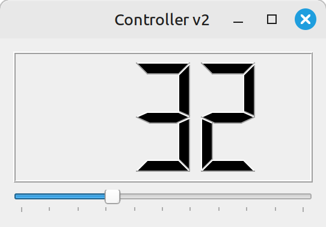

08: Subclassing / Signals & Slots
COMP2811 User Interfaces
Today’s Objectives
To examine the role of subclassing in Qt and see how applications are created as subclasses
To see how signals and slots are used to make an application responsive to user interaction
Reasons For Subclassing
- To create customized versions of existing widgets
- e.g., version of
QLineEditthat checks for valid input
- e.g., version of
- To create new ‘composite widgets’ that group related widgets together to perform a task
- To create the main window of our application
- To support event handling via custom signals & slots
Custom Widget Example
postcode.hpp
- 1
-
Inherits from
QLineEdit - 2
- Widget constructors always have a parameter pointing to the widget that contains this widget; null pointer signifies that this widget is the root of the object tree
Note
In this very simple example, all necessary customization takes place inside constructor, so no other fields or methods are necessary in the subclass.
Custom Widget Example
postcode.cpp
- 1
- Actual regular expression too complex to show here!
- 2
- Note how we delegate to superclass constructor
- 3
- Regular expression is used to create a validator object
- 4
-
Validator is installed via a call to
setValidator()(remember:this= pointer to ‘this object’)
Composite Widget Example
Suppose we wish to combine a slider with something that displays the current value of that slider
We will be making frequent use of this, so it makes sense to implement it as a new widget, containing the slider and display widgets

controller.hpp
#pragma once
#include <QWidget>
class QLCDNumber;
class QSlider;
class Controller: public QWidget
{
public:
Controller(QWidget* = nullptr);
private:
QLCDNumber* number;
QSlider* slider;
void createWidgets();
void arrangeWidgets();
};- 1
- Forward reference to class (as we don’t need full definition in this file)
- 2
-
QWidgetis a ‘blank canvas’ and thus a good basis for composite widgets - 3
- Remember: all widgets maintain a pointer to the widget that contains them
- 4
- Widgets that make up this composite are private fields of the class
- 5
- Helper method to make implementation of class neater—private because it is an implementation detail
controller.cpp
#include "controller.hpp"
...
Controller::Controller(QWidget* parent): QWidget(parent)
{
createWidgets();
arrangeWidgets();
}
void Controller::createWidgets()
{
number = new QLCDNumber(3);
number->setMinimumHeight(75);
number->display(50);
slider = new QSlider(Qt::Horizontal);
slider->setRange(0, 100);
slider->setTickPosition(QSlider::TicksBelow);
slider->setTickInterval(10);
slider->setValue(50);
}
void Controller::arrangeWidgets()
{
QVBoxLayout* layout = new QVBoxLayout();
layout->addWidget(number);
layout->addWidget(slider);
setLayout(layout);
}Application Windows
A subclass of
QWidgetcan be used as a window but doesn’t have all of the features we expect of an applicationSubclassing
QMainWindowgives us a menu bar, status bar, toolbars and docking areas
Example
Example
window.cpp
#include "window.hpp"
#include <QtWidgets>
EditorWindow::EditorWindow(const QString& fname): filename(fname)
{
setWindowTitle("Text Editor");
createWindowContent();
createFileMenu();
createFormatMenu();
}
void EditorWindow::createWindowContent()
{
text = new QTextEdit();
text->setFont(QFont("Courier", 12));
setCentralWidget(text);
...
}
void EditorWindow::createFileMenu()
{
QMenu* fileMenu = menuBar()->addMenu("&File");
QAction* open = fileMenu->addAction("&Open");
open->setShortcuts(QKeySequence::Open);
open->setStatusTip("Open an existing file");
...
}- 1
-
Call
setCentralWidget()to specify primary content of the window - 2
-
Call
menuBar()to get a pointer to the menu bar object, thenaddMenu()on that to create a new menu - 3
-
Menus are populated by calling
addAction() - 4
- Specifies a keyboard shortcut for this action
- 5
- Specifies text that will be shown in status bar while cursor is over this action
Signals & Slots
A signal is emitted when a meaningful event happens
To handle that event, we connect its signal to a slot
Qt widgets already have many useful signals and slots predefined for you to use
When you create a subclass of a Qt widget, you can define your own custom signals and slots in it
Signals & Slots

Data Transfer
A signal can carry data; if so, it must declare the types of all the values that it carries
A slot can receive data; if so, it must declare the types of the values that it expects to receive
Connection is only possible if, for every slot value, there is a corresponding signal value of the same type
Any additional values carried by the signal are ignored
Flexibility
- One signal can be connected to many slots
- Many signals can be connected to the same slot
- A signal can be connected to another signal
- Connections can be created and removed dynamically
Back to Controller…
We need only one small addition to constructor:
controller.cpp
- 1
-
Connect
valueChangedsignal ofQSliderwidget… - 2
-
…to
displayslot ofQLCDNumberwidget
Note
valueChanged signal has a single int value associated with it; display slot expects a single int value to be supplied, so the two are compatible.
Alternative Syntax
controller.cpp
Note
This is a more modern and more type-safe approach, in which the compiler can help to flag mistakes—but on occasion it can require you write to more complex code.
Custom Slots
Create a subclass of a Qt widget
Include
Q_OBJECTmacro in class definitionAdd a
public slotsorprivate slotssection to class definition, listing prototype(s) of your slot(s)Implement the slot(s) in the class implementation file, just as you would for other methods of the class
When you build the application, Qt’s meta-object compiler will be run, to add the necessary ‘plumbing’ to your class
Back to Controller…
#pragma once
#include <QWidget>
class QLCDNumber;
class QSlider;
class Controller: public QWidget
{
Q_OBJECT
public:
Controller(QWidget* = nullptr);
private slots:
void setColourFor(int);
private:
QLCDNumber* number;
QSlider* slider;
void createWidgets();
void arrangeWidgets();
};- 1
- Tells Qt to invoke meta-object compiler as part of the build process
- 2
- Our custom slot will be private, so only the widget itself can use it; if public, external signals could be connected to it
- 3
- Slot is declared just like a method prototype
Connections
Controller::Controller(QWidget* parent): QWidget(parent)
{
createWidgets();
arrangeWidgets();
connect(slider, SIGNAL(valueChanged(int)),
number, SLOT(display(int)));
connect(slider, SIGNAL(valueChanged(int)),
this, SLOT(setColourFor(int)));
}- 1
- Signals can be connected to more than one slot!
- 2
-
Use
thisto specify that thisControllerowns the slot that will receive the signal
Slot Implementation
Summary
We have
Explored three reasons for subclassing Qt widgets:
- To customize aspects of an existing widget
- To create a composite of other widgets
- To create an application window with menus, toolbar, etc
Discussed how Qt’s signals and slots provide a useful and flexible abstraction of event handling in a UI
Seen examples of using the built-in signals & slots
Considered how we define custom slots in an application
Follow-up / Further Reading
- Qt docs: Signals & Slots